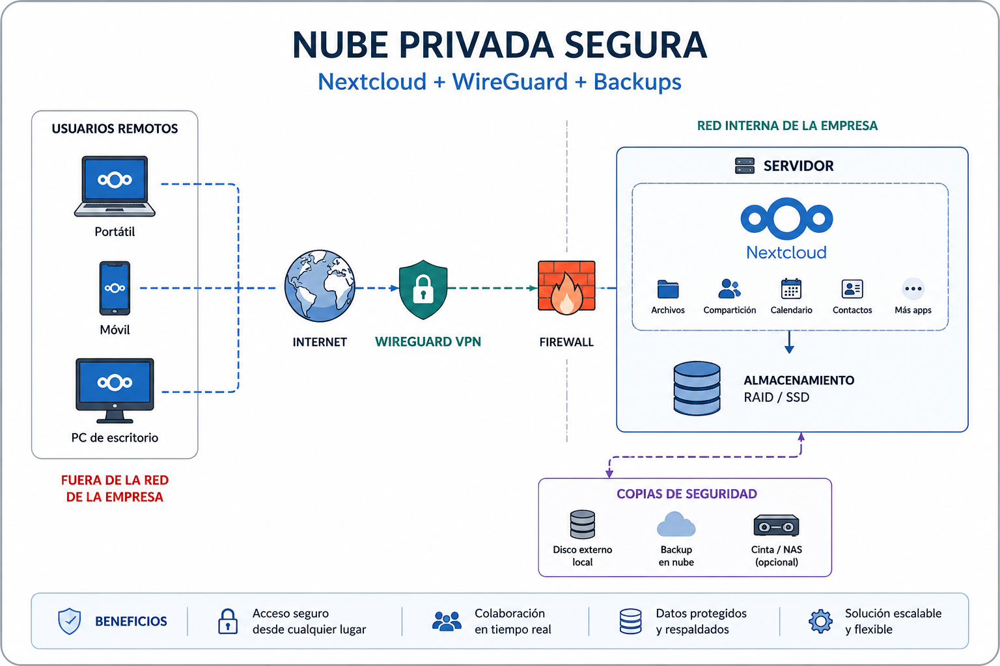
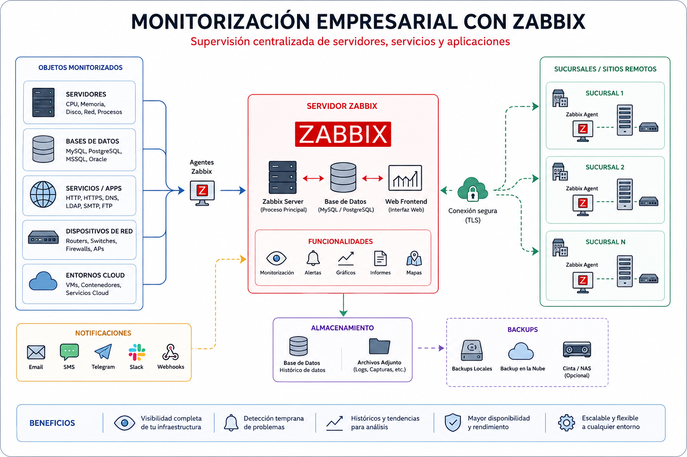
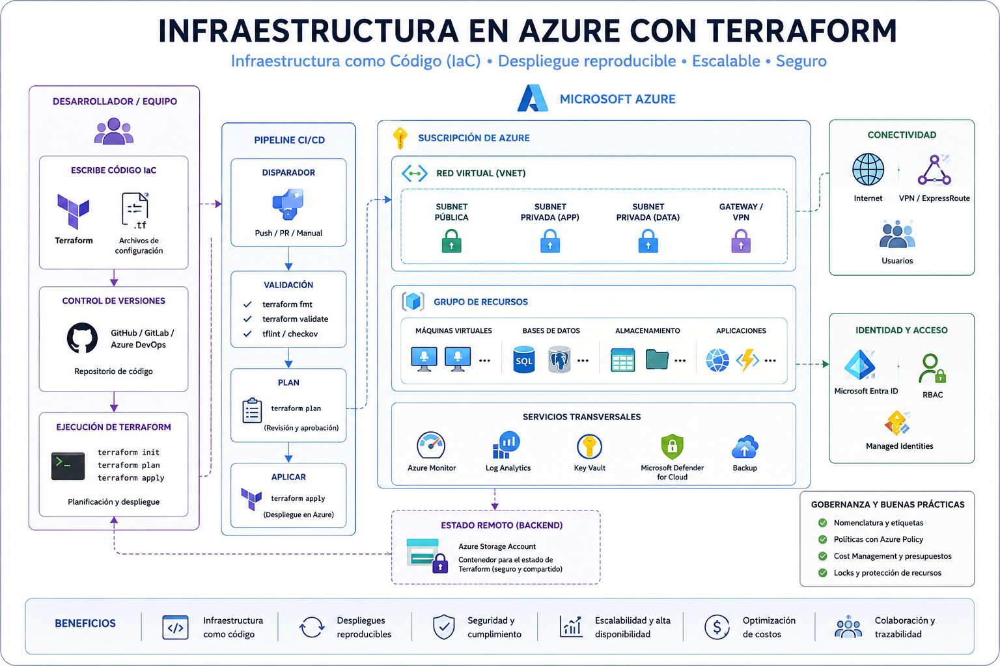
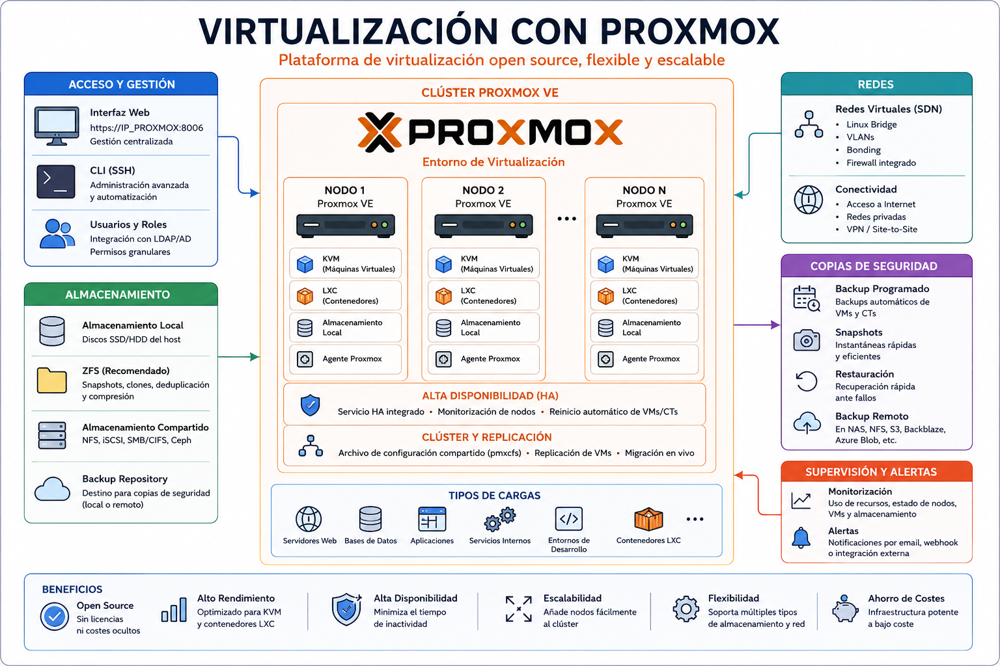

Implantamos soluciones cloud, servidores, copias de seguridad, acceso remoto seguro y monitorización para que tu empresa trabaje con menos riesgos y menos interrupciones.
Ayudamos a empresas que necesitan trabajar de forma segura, evitar pérdidas de datos y reducir incidencias técnicas.
Implantamos copias de seguridad y planes básicos de recuperación.
Configuramos acceso remoto mediante VPN y control de accesos.
Centralizamos documentos en soluciones cloud o nube privada.
Monitorizamos disponibilidad, rendimiento y alertas importantes.
Nube privada para compartir archivos y trabajar desde cualquier lugar.
Desde 499 € + 99 €/mesAcceso remoto seguro para empleados, colaboradores y sedes remotas.
Desde 299 € + 39 €/mesCopias automáticas y recuperación ante borrados, fallos o incidencias.
Desde 199 € + 59 €/mesAlertas automatizadas para detectar problemas antes de que afecten al negocio.
Desde 199 € + 49 €/mesServicio integral para externalizar la gestión tecnológica de tu empresa.
Desde 799 € + 149 €/mesDescarga nuestro dossier comercial y descubre cómo podemos ayudarte a mejorar la seguridad, disponibilidad y gestión de tu infraestructura IT.
Descargar Dossier PDFServicios diseñados para que tu empresa trabaje de forma más segura, organizada y con menos interrupciones.
Centraliza tus documentos y permite que tu equipo acceda a los archivos desde oficina, casa o móvil.
Ver Cloud EmpresarialConecta empleados, colaboradores o sedes remotas mediante VPN segura y control de accesos.
Ver Seguridad y VPNProtege la información crítica de tu empresa frente a borrados, fallos técnicos o incidencias.
Ver BackupDetecta problemas antes de que afecten al negocio mediante alertas y monitorización.
Ver SupervisiónUnificamos cloud, seguridad, backups y supervisión bajo una gestión tecnológica integral.
Ver InfraestructuraDescarga una presentación completa con servicios, precios orientativos y casos de uso para PYMES.
Descargar PDFAplicamos buenas prácticas de seguridad desde el inicio de cada proyecto para proteger la información y los servicios de tu empresa.
Diseñamos infraestructuras preparadas para crecer junto a tu negocio sin necesidad de rehacer la solución en el futuro.
Utilizamos herramientas ampliamente adoptadas en el sector para garantizar estabilidad, soporte y evolución tecnológica.
Cada empresa es diferente. Analizamos tus necesidades y adaptamos la solución a tu entorno y presupuesto.
Entregamos documentación clara para que conozcas tu infraestructura y puedas operar con total transparencia.
Acompañamos a nuestros clientes antes, durante y después de la implantación de los servicios.
Gestión documental segura, copias de seguridad y acceso remoto.
Protección de información sensible y continuidad del servicio.
Acceso seguro a contratos, imágenes, documentación y clientes.
Confidencialidad, backup y acceso seguro desde cualquier lugar.
Podemos ayudarte a diseñar una solución segura y adaptada a tu negocio.
Contactar ahoraProyectos documentados y entornos de laboratorio utilizados para validar tecnologías, procedimientos y buenas prácticas de infraestructura IT.
Despliegue automatizado de infraestructura cloud mediante Infrastructure as Code.
Monitorización de eventos de seguridad, detección de amenazas y centralización de logs.
Supervisión de servidores, disponibilidad de servicios y alertas automáticas.
Nube privada empresarial con acceso seguro mediante VPN.
Despliegue, configuración y mantenimiento automatizado de infraestructura.
Entornos de pruebas con Proxmox, Docker, Linux y servicios empresariales.
Soluciones y laboratorios desarrollados para demostrar capacidades en cloud, automatización, monitorización, seguridad e infraestructura IT.
Todos los proyectos han sido desplegados, documentados y publicados como casos prácticos profesionales.
Diseño e implementación de un laboratorio virtual basado en Proxmox VE con redes, máquinas virtuales, almacenamiento y servicios empresariales para simular entornos reales.
Ver en LinkedInDespliegue automatizado de recursos cloud mediante Infrastructure as Code, aplicando buenas prácticas de organización y automatización.
Ver en LinkedInPlataforma SIEM para detección de eventos, alertas, monitorización de seguridad y centralización de logs.
Ver en LinkedInSupervisión de servidores Linux y Windows, disponibilidad de servicios, alertas y métricas en tiempo real.
Ver en LinkedInAlmacenamiento empresarial seguro accesible mediante VPN, orientado a colaboración, privacidad y control de datos.
Ver en LinkedInDespliegue y configuración automática de servicios, hardening básico y gestión repetible de infraestructura.
Ver en LinkedInMigración de una aplicación empresarial utilizando Docker, Azure Kubernetes Service, Azure Container Registry y estrategia de backup con Veeam.
Ver en LinkedInCada proyecto sigue un proceso claro para garantizar seguridad, calidad, documentación y continuidad operativa.
Evaluamos necesidades, infraestructura existente, riesgos y objetivos del negocio.
Diseñamos una solución adaptada, escalable y alineada con el presupuesto.
Desplegamos la infraestructura siguiendo buenas prácticas y estándares de seguridad.
Entregamos procedimientos y documentación para facilitar la gestión futura.
Acompañamos al cliente en la evolución, mantenimiento y mejora de la solución.
Ejemplos visuales de soluciones IT que pueden adaptarse a pequeñas y medianas empresas.
Nextcloud, WireGuard y backups para acceder a archivos empresariales de forma segura desde cualquier lugar.

Zabbix para supervisar servidores, servicios, disponibilidad, rendimiento y alertas importantes.

Azure y Terraform para desplegar infraestructura cloud de forma ordenada, repetible y documentada.

Proxmox VE para virtualización, servicios internos y laboratorio empresarial seguro y flexible.

Cuéntanos qué necesita tu empresa y estudiaremos la mejor solución IT para tu caso.
Podemos ayudarte con cloud empresarial, acceso remoto seguro, copias de seguridad, supervisión o infraestructura IT gestionada.